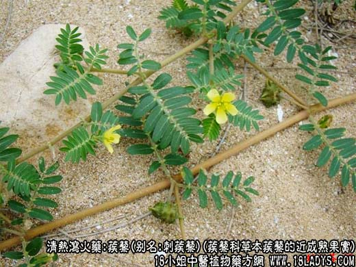
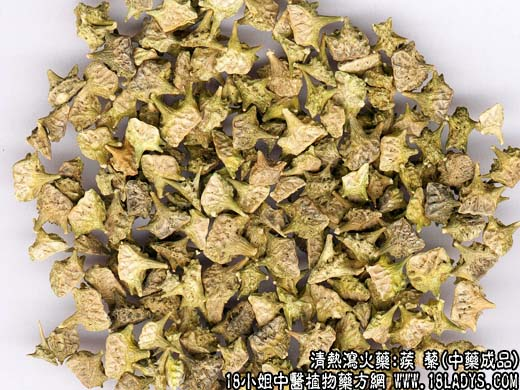
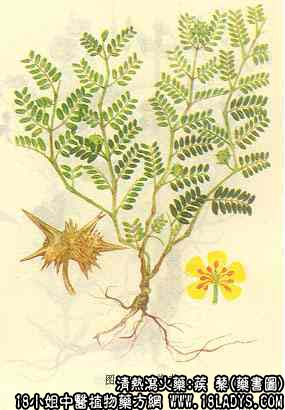

蒺藜为常用中药，《神农本草经》列为上品。原名蒺藜子。
别名：刺蒺藜，硬蒺藜。
来源：为蒺藜科一年生草本植物蒺藜的近成熟果实。
产地：主产河南、河北、山东、山西及北方各省。
性状鉴别：五个小坚果聚成星球状复果。具10个粗大木质的硬刺，顶端俩俩相接，呈五角星状。商品多脱开为单个小坚果，桔瓤片状，长7~8毫米，宽4~5毫米，厚约3毫米。表面黄色并有网状花纹，弓形面有长，短刺各一对，气微，味淡。以颗粒均匀，饱满坚实，色黄绿者为佳。
主要成分：含挥油、剌蒺藜甙、生物碱、脂肪油等。
药理作用：疏肝熄风、行瘀去滞。能解郁、明目、止痒，其他用为降压（水浸液能降低麻醉动物的血压）、镇静。临床观察认为可能还有抗过敏作用。
炮制：去剌盐炒。
性味：苦温。
归经：入肝、肺经。
功能：散风，疏肝，明目行血。
主治：头痛，目赤肿痛，多泪，乳汁不下。
临床应用：1、治肝经风邪所致的头晕目眩，取其有降压、镇静作用。现代治肝阳上亢之高血压表现头痛头晕者，多用蒺藜配牛膝、钩藤等，方如平肝降压汤（见牛膝项下）。
2、为眼科常用药，治目赤多泪、或痛或痒、视物模糊、有外眼翳障，适用于风热较轻的角膜炎、角膜炎退行期，或急性结膜炎，常配木贼、决明子、谷精草等清热明目药。
3、治风热所致的皮肤发痒和皮诊，如荨麻疹、神经性皮炎、某些类型的慢性湿疹等，常配其它散风热药如蝉蜕、防风以及养血药如首乌、当归，方如蒺藜消风饮。
4、治肝郁所致的胸胁胀闷疼痛。前人认为蒺藜有行血去瘀作用，现代根据这一原理，试用白蒺藜9g，配参三七2.4g内服，治冠心病绞痛，有一定效果。
用量：6~12g。
处方举例：蒺藜消风饮：白蒺藜9g、防风6g、荆芥9g、蝉蜕3g、川芎3g、赤芍6g、首乌9g、当归9g、生地12g、甘草3g，水煎服。
注：另有一种软蒺藜，原植物为藜科的西伯利亚滨藜的果实（胞果）。性状为扁平扇形，上棕色，粗糙，有主脉三条，放射状隆起，细脉网状。老熟时果实基部有剌状突起，质软不刺手，果皮种皮均薄，剥去后内有油质的胚与胚乳。气微，味微酸咸，天津两种蒺藜均用。